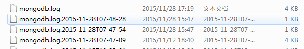
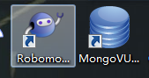

mongoDB
唠叨
本来好好的星期六，可以睡懒觉的日子，却被通知今天要来公司加班，还他喵的无偿加班。。更他喵的让人无语的还是没有任务，只是因为别的部门要加班，涉及到我这写的一些东西，就要过来。真的已经不知道说啥好了。。心中不止一只草泥马神兽在飞过了。。。( ˇˍˇ )
虽然心情很糟糕的说，但是困在单位，一整天，无所事事更感觉浪费生命。发现单位这台破电脑，mongo竟然没有装，反正闲着也是闲着，就这么装下吧，遇到的问题，也在这里记录下。。
踩了几个坑
就不吐槽公司的网有多坑爹了，反正n多分钟以后，mongo的安装包也就那么下载完了。安装的过程挺简单的，下一步下一步的就那么安装完了，但是开启mongo服务的时候遇到了点问题，大概以下几点：
[说明，本人在单位的电脑是 window7 32位操作系统]
- 安装成功后，将存放有mongod.exe的文件所在文件夹加入系统环境Path变量中，就可以在任意文件夹中打开cmd 输入mongod和mongo这些命令了
当遇到这个问题时，是说明当前的命令行窗口处于非管理员状态，切换成管理员状态即可
1
I CONTROL Hotfix KB2731284 or later update is not installed, will zero-out data files
在windows 32位操作系统下，默认是不开启journal模式的,命令还开启时，添加–journal即可
mongod.exe中开启数据库服务，必须要添加logpath才可以，否则，会提示说 –insatll 作为log的默认路径。
具体的命令如下：1
mongod --dbpath="数据库文件夹" [--logappend] --logpath="log日志文件" --install --serviceName="[你起的名字，比如mongoDB]" net start [你起的名字] net stop [你起的名字]
–logpath=”具体的文件名”,当不使用–logappend参数时，每次重启都会创建改文件，同时，把已有的文件添加事件后缀，存放在当前目录下。
- 使用mongo 命令 来在命令行查看数据库
- 相应的客户端gui有mongoVUE,RoboMongo

以上就是大概这次安装时候总结的一些东东吧。
一天的大好时光就这么浪费在这个没有任务，又被逼加班的事情上了，心情很郁闷呢。。。还要不得不装作很忙的样子在打酱油中去O__O “…”